Brady Arrhythmias
Raja Selvaraj
Organization of this talk
- Normal rhythm
- Bradyarrhythmias - Introduction
- Case illustrations
- Management - interspersed
Normal rhythm
- Origin
- Rate
- AV conduction
Normal rhythm
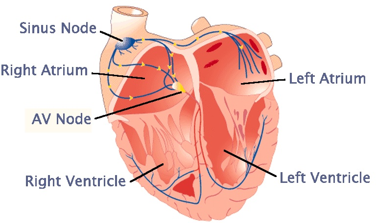
Arrhythmias
- Not a normal rhythm
- Bradyarrhythmia
- Tachyarrhythmia
Bradyarrhythmias
- Abnormal rhythm with a slow heart rate (<60 bpm in adults)
- Sinus node disease (too few P waves)
- Atrioventricular block (too few QRS, P > QRS)
Sinus node disease
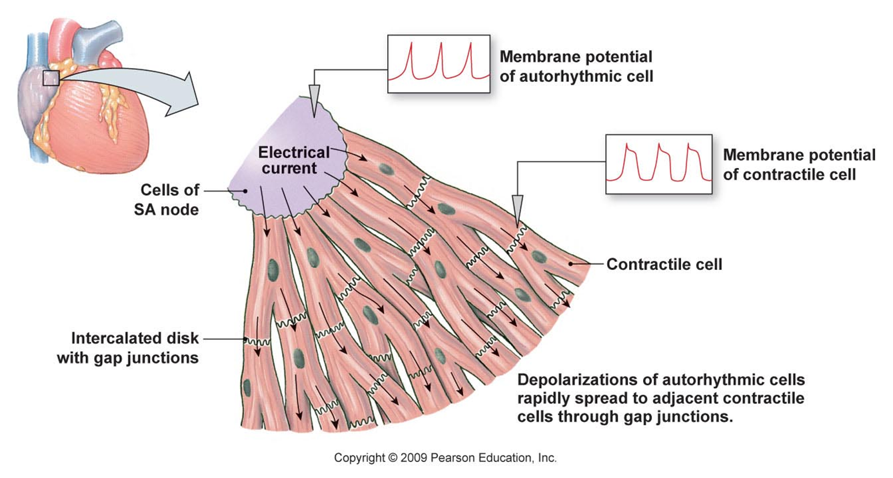
Sinus node disease
- Sinus arrest
- Sinus bradycardia
- Sino-atrial block
- Second degree type I
- Second degree type II
Atrioventricular block
First degree
Second degree type I
Second degree type II
Third degree
30 year old male - ECG done for pre-employment check up
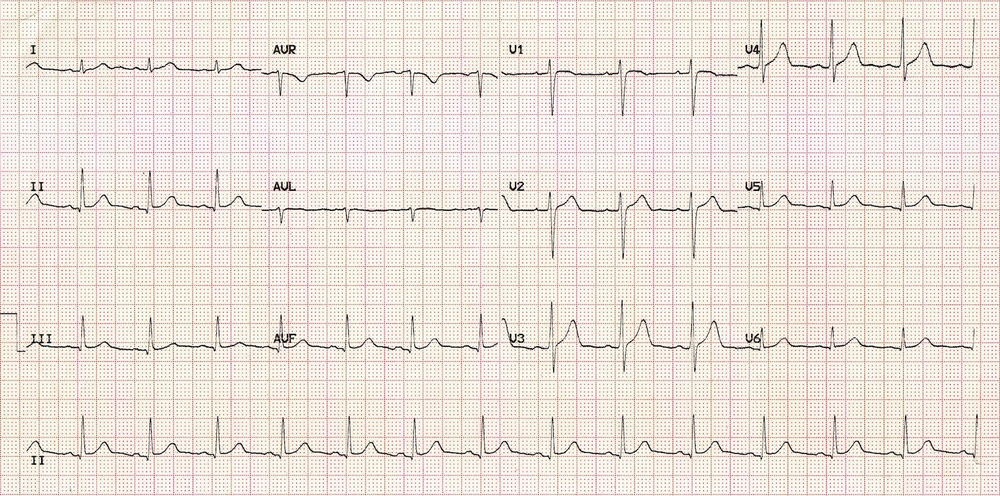
P wave axis
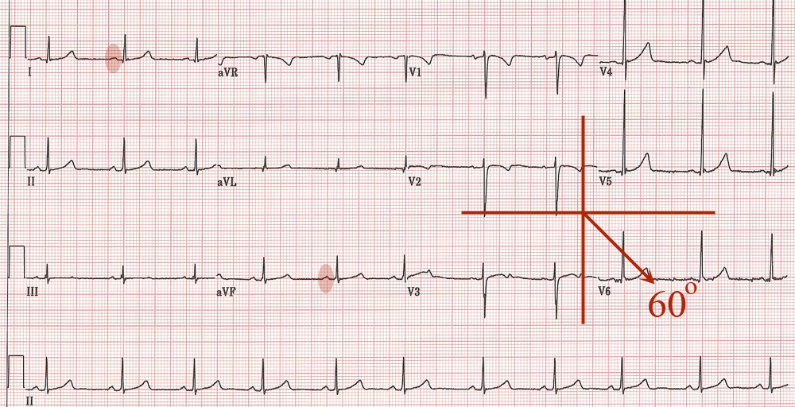
60 year old female, complains of presyncopal episodes
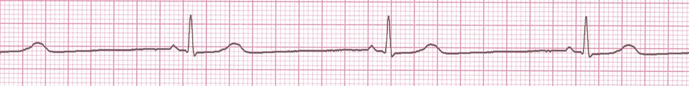
Bradycardia - symptoms
- Giddiness
- Syncope
- Fatigue
- Breathlessness
- Death
Young male, asymptomatic
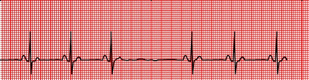
Management of sinus bradycardia
- Rule out underlying cause
- Drugs ?
- Physiological ?
- Symptoms
- Pacemaker implantation
Drugs
- Atropine
- Isoprenaline
- Orciprenaline
- Long acting theophylline
55 year old male, asymptomatic, referred for abnormal ECG

AV Conduction block - degrees
- First: All P waves conducted
- Second: Some P waves conducted
- Third: No P waves conducted
Young male, found to have irregular pulse
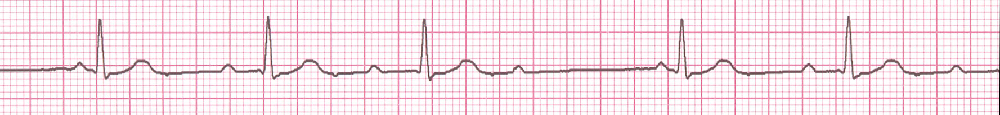
Second degree AV block - Mobitz types
- Type 1 - Progressive PR prolongation before block
- Type 2 - Fixed PR interval of conducted beats
RR interval in Wenckebach block
SA wenckebach block
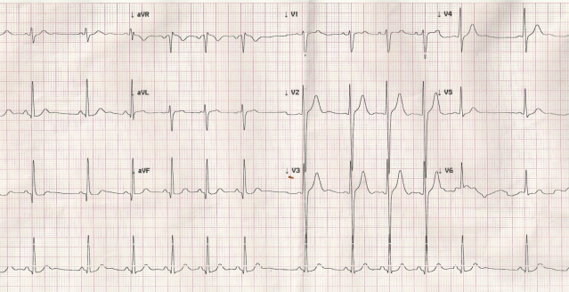
Middle aged female wih syncope
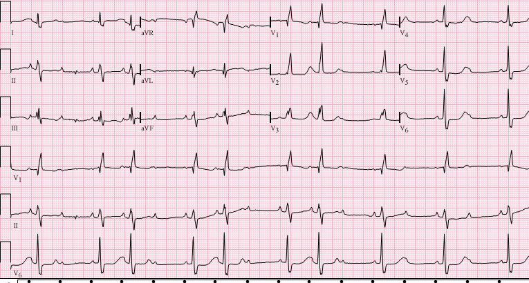
Mobitz types - implications
- Type 1
- Block above His
- Usually benign
- Type 2
- Block at or below His
- Usually needs treatment
Atrioventricular conduction system
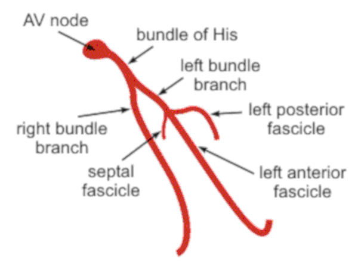
70 year old male, fainted at home
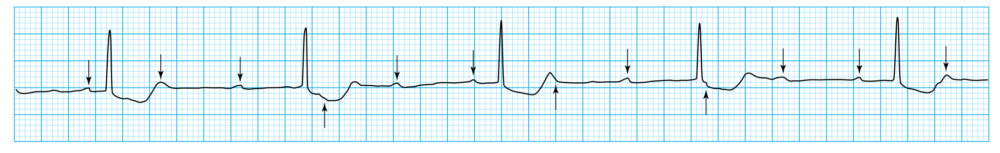
AV block or sinus bradycardia
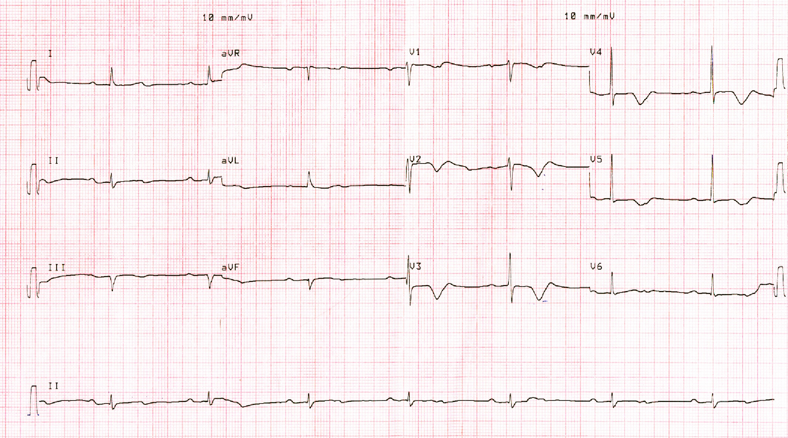
56 yr old female, with one episode of syncope
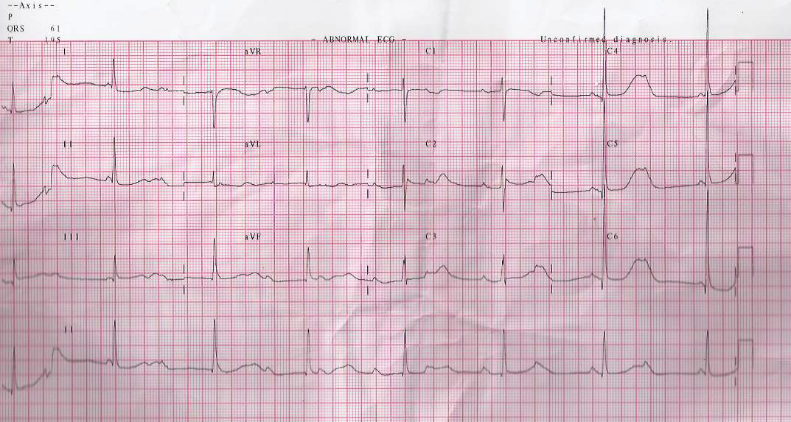
CHB - Life threatening condition
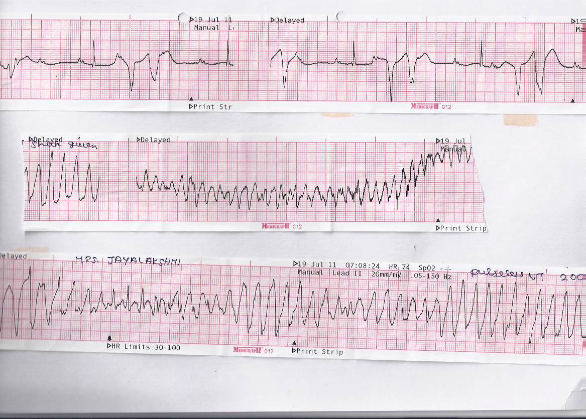
Pacing - temporary
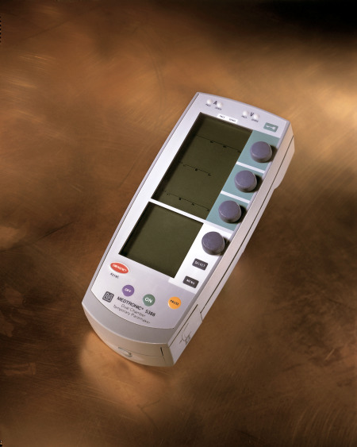
Pacing - permanent
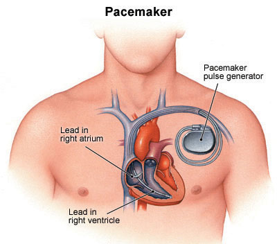
Pacing for CHB
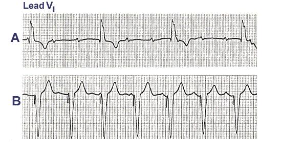
Summary
- Abnormalities of rhythm are an important class of heart disorders
- Bradyarrhythmias - Slow rate
- Can be asymptomatic, affect daily life or even be life threatening in some patients
- Important to differentiate benign forms from malignant forms
- Repetitive exposure to ECGs, management of individual patients